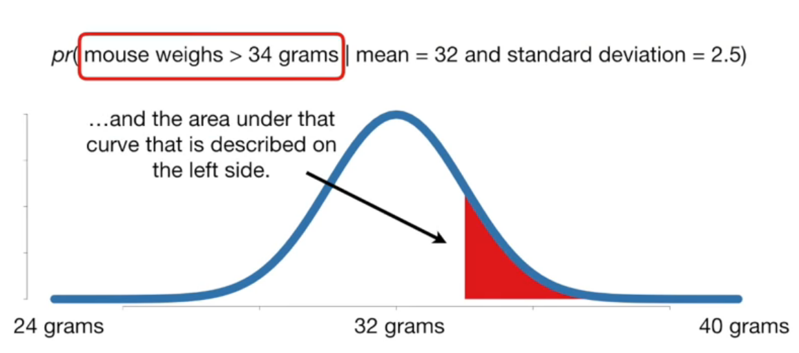
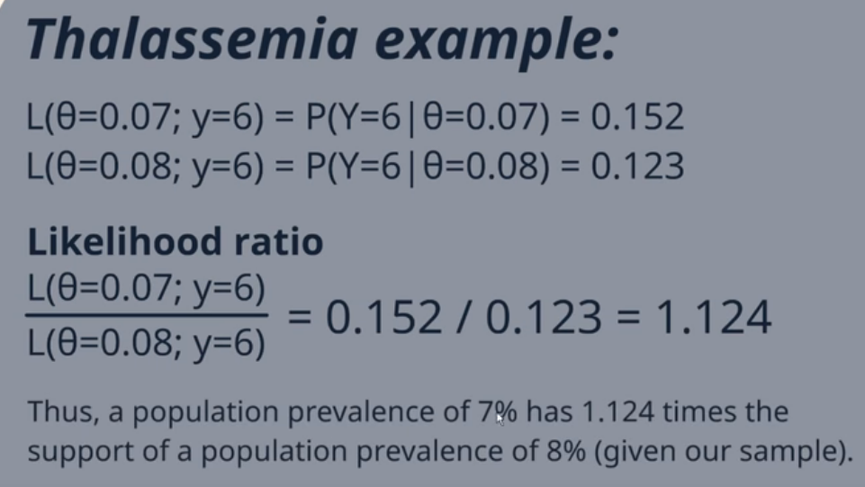

Likelihood
from IPython.display import ImageLikelihood
Josh Starmer does a great job succinctly explaining Likelihood as the counterpart to probability.
Whereas probability describes the chance of seeing an observation, given a probability distribution
Image('../images/starmer_prob.PNG')
Likelihood describes the chance that we’re looking at a certain probability distribution, working backwards from given a sample.
Image('../images/starmer_likelihood.PNG')
Likelihood Ratios
As zedstatistics then goes on to explain, the values for a given likelihood are mostly immaterial. The real importance is in how these values compare from one likelihood to another.
Image('../images/zed_example.PNG')
Image('../images/zed_interpretation.PNG')
Likelihood Ratios in Testing
Another application of the likelihood ratio is in evaluating class separability of various tests.
I borrow two short videos (1, 2) which basically outline that we can use the Likelihood Ratios to compare tests based on their ability to correctly identify positive or negative samples.
Once more, we’ll divide two terms
Image('../images/shaneyfelt_ratio.PNG')
But instead of comparing two distribution forms, as above, we can take the ratio
Image('../images/claire_ratios.PNG')
Ideally, the value we get in our Positive test is large and the value we get in our Negative test is very small.
So given an array of tests, we can use the likelihood ratios to decide on which is best to “rule in” or “rule out” observations, depending on which we’re more concerned with.
Image('../images/shaneyfelt_tests.PNG')
Moreover, if we have an initial idea of the probability of an outcome, we can use these nifty little charts to update the probability of that outcome, based on the information gain achieved with our tests
Image('../images/shaneyfelt_chart.PNG')